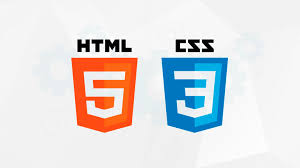

Linguagens de Programação e Seus Frameworks
Front End
O Front End lida com a interface do usuário e a interação visual do lado do cliente. As principais linguagens e frameworks são:
- JavaScript

- Descrição: A linguagem dominante para o desenvolvimento frontend, usada para criar elementos interativos e dinâmicos nas páginas web.
- Principais Frameworks:
- React
- Vue.js
- Angular
- Svelte
- TypeScript

- Descrição: Superset do JavaScript que adiciona tipagem estática, muito usado para projetos maiores.
- Principais Frameworks:
- React (com TypeScript)
- Angular
- Vue (com TypeScript)
- HTML & CSS

- Descrição: Embora não sejam linguagens de programação completas, HTML (para estrutura) e CSS (para estilos) são essenciais no frontend.
- Principais Frameworks:
- Bootstrap
- Tailwind CSS
- Foundation
Back End
O Back End lida com a lógica de negócios, gerenciamento de banco de dados e comunicações entre servidores e clientes. As principais linguagens e frameworks são:
- JavaScript (Node.js)
- Descrição: Usando Node.js, JavaScript também pode ser utilizado no backend.
- Principais Frameworks:
- Express.js
- NestJS
- Koa
- Python

- Descrição: Uma linguagem versátil muito popular em desenvolvimento backend.
- Principais Frameworks:
- Django
- Flask
- FastAPI
- Java

- Descrição: Uma das linguagens mais usadas no desenvolvimento de backend.
- Principais Frameworks:
- Spring Boot
- Micronaut
- JHipster